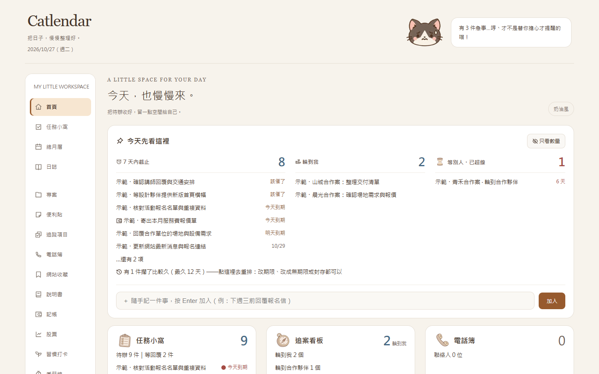
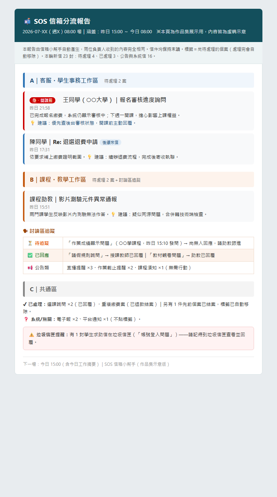
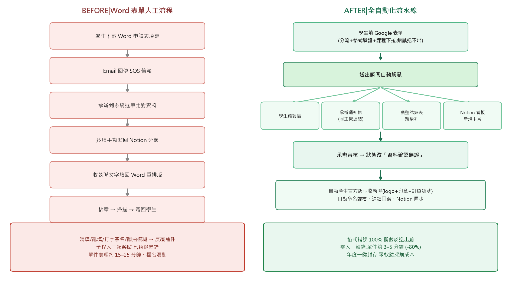

v63六天 27 版起家，至今仍在長大
🐱 Catlendar：可憐上班族的貓貓日曆
我把任務、追案進度、月曆和記帳收進一個離線的 HTML 檔，讓每天早上打開電腦的第一眼，就知道今天輪到我做什麼、球在誰手上。它已經開源在 GitHub，還有十隻貓狗吉祥物輪班陪上班。
看完整故事與截圖 →最能代表我的三件作品。點整張卡可以看完整故事與截圖。

我把任務、追案進度、月曆和記帳收進一個離線的 HTML 檔，讓每天早上打開電腦的第一眼，就知道今天輪到我做什麼、球在誰手上。它已經開源在 GitHub，還有十隻貓狗吉祥物輪班陪上班。
看完整故事與截圖 →
官方信箱每天湧入數十封信，曾有學生的求助信掉進垃圾信匣差點漏接。現在 AI 每個平日自動掃信兩次、依分工分類、寄出卡片式報告給每位負責人。上線兩週，它就從垃圾信匣救回了兩封求助信。
看完整故事與截圖 →
學生的換課、停修、退費申請，過去要下載 Word、來回補件、人工逐筆轉錄。我重建了整條流水線：格式錯誤在送出前就被擋下，審核狀態改一格，官方收執聯自動生成歸檔。這一季它自動出了 37 份收執聯，轉錄錯誤歸零。
看完整故事與截圖 →每張截圖都是示範資料或去識別化版本；還在進行中的專案，卡片上會寫明目前走到哪一步。
每天都在做一樣的事？那它就不該由人來做。我會先把隱性的業務規則一條一條寫清楚，這本身就是最關鍵的工程。
我把需求拆解到 AI 做得出來、我驗收得了的程度。寄出鍵永遠在人手上：AI 負責彙整與建議，人負責決策與把關。
每個系統都附操作手冊與 SOP，驗收標準是「新人照著做就能獨立運轉」。做完能交接，才算真的做完。
傳播碩士（新媒體與使用者經驗組），現任國立陽明交通大學課程規劃師。到職八個月就獨立接下全國性暑期線上學院的年度執行，一邊營運、一邊把手上的重複業務逐一自動化。我相信好的行政是一種產品設計：使用者不用問第二次，就是最好的服務。